一.Epoll是什么?
epoll是个什么东东呢?按照man手册的说法：是为处理大批量句柄而作了改进的poll。当然，这不是2.6内核才有的，它是在2.5.44内核中被引进的(epoll(4) is a new API introduced in Linux kernel 2.5.44)，它几乎具备了之前所说的一切优点，被公认为Linux2.6下性能最好的多路I/O就绪通知方法。
二.epoll与poll和select对比
[1]select 的缺点：
单个进程能够监视的文件描述符的数量存在最大限制，通常是1024，当然可以更改数量，但由于select采用轮询的方式扫描文件描述符，文件描述符数量越多，性能越差;(在linux内核头文件中，有这样的定义：#define __FD_SETSIZE 1024)
内核 / 用户空间内存拷贝问题，select需要复制大量的句柄数据结构，产生巨大的开销;
select返回的是含有整个句柄的数组，应用程序需要遍历整个数组才能发现哪些句柄发生了事件;
select中应用程序如果没有完成对一个已经就绪的文件描述符进行IO操作，那么之后每次select调用还是会将这些文件描述符通知进程。
相对于我们的select模型，我们的poll是使用链表保持文件描述符，因此没有了监视文件数量的限制，但是2，3，4等缺点依旧存在。
拿select模型为例，假设我们的服务器需要支持100万的并发连接，则在__FD_SETSIZE 为1024的情况下，则我们至少需要开辟1k个进程才能实现100万的并发连接。除了进程间上下文切换的时间消耗外，从内核/用户空间大量的无脑内存拷贝、数组轮询等，是系统难以承受的。因此，基于select模型的服务器程序，要达到10万级别的并发访问，是一个很难完成的任务。
因此，该epoll上场了。
三.Epoll的工作原理
设想一下如下场景：有100万个客户端同时与一个服务器进程保持着TCP连接。而每一时刻，通常只有几百上千个TCP连接是活跃的(事实上大部分场景都是这种情况)。如何实现这样的高并发?
在select/poll时代，服务器进程每次都把这100万个连接告诉操作系统(从用户态复制句柄数据结构到内核态)，让操作系统内核去查询这些套接字上是否有事件发生，轮询完后，再将句柄数据复制到用户态，让服务器应用程序轮询处理已发生的网络事件，这一过程资源消耗较大，因此，select/poll一般只能处理几千的并发连接。
epoll的设计和实现与select完全不同。epoll通过在Linux内核中申请一个简易的文件系统(文件系统一般用什么数据结构实现?二叉树树)。然后epoll的调用分成了3个部分：
1)调用epoll_create()建立一个epoll对象(在epoll文件系统中为这个句柄对象分配资源)
2)调用epoll_ctl向epoll对象中添加这100万个连接的套接字
3)调用epoll_wait收集发生的事件的连接
如此一来，要实现上面说是的场景，只需要在进程启动时建立一个epoll对象，然后在需要的时候向这个epoll对象中添加或者删除连接。同时，epoll_wait的效率也非常高，因为调用epoll_wait时，并没有一股脑的向操作系统复制这100万个连接的句柄数据，内核也不需要去遍历全部的连接。
具体流程：
[1]当我们某个进程调用epoll_create()函数的时候，linux内核会默认创建一个eventpoll结构体，这个结构体中有两个成员与epoll的使用方式相关。
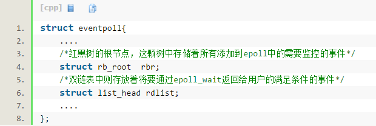
每一个epoll对象都有一个独立的eventpoll结构体，用于存放通过epoll_ctl方法向epoll对象中添加进来的事件。这些事件都会挂载在红黑树中，如此，重复添加的事件就可以通过红黑树而高效的识别出来.
而所有添加到epoll中的事件都会与设备(网卡)驱动程序建立回调关系，也就是说，当相应的事件发生时会调用这个回调方法。这个回调方法在内核中叫ep_poll_callback,它会将发生的事件epitem添加到rdlist双链表中。
在epoll中，对于每一个事件，都会建立一个epitem结构体，如下所示：
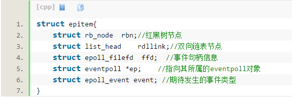
当调用epoll_wait检查是否有事件发生时，只需要检查eventpoll对象中的rdlist双链表中是否有epitem元素即可。如果rdlist不为空，则把发生的事件复制到用户态，同时将事件数量返回给用户。
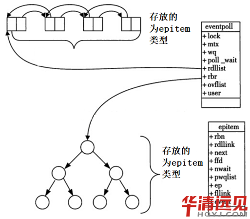
总结：
(1)我们我们调用epoll_wait()函数的时候，系统创建一个epoll对象，每个对象都有一个
叫做eventpoll类型的结构体与之对应，该结构体中主要有两个主要的成员，一个是
rbn,代表将要通过epoll_ctl向epll对象中添加的事件。这些事情都是挂载在红黑树中。
一个是rdlist，里面存放的是将要发生的事件
(2)当我们使用epoll_ctrl()函数的时候，就是向epoll对象中添加，删除，修改感兴趣的事件
(3) epoll_wait()系统。通过此调用收集在epoll监控中已经发生的事件。当监控的事件状态发生改变的时候，我们会调用会调用函数把epitem加入到rdlist中去。
一. Epoll的API函数接口
3.1 事件的创建---epoll_create();
int epoll_create(int size);
int epoll_create1(int flags);
功能：poll_create()创建一个epoll的事例，通知内核需要监听size个fd。size指的并不是最大的后备存储设备，而是衡量内核内部结构大小的一个提示。当创建成功后，会占用一个fd，所以记得在使用完之后调用close()，否则fd可能会被耗尽。
Note:自从Linux2.6.8版本以后，size值其实是没什么用的，不过要大于0，因为内核可以动态的分配大小，所以不需要size这个提示了。
其次：epoll_create1()函数，其实它和epoll_create差不多，不同的是epoll_create1函参数flag：
・ 当flag是0时，表示和epoll_create函数完全一样，不需要size的提示了;
・ 当flag = EPOLL_CLOEXEC，创建的epfd会设置FD_CLOEXEC;
・ 当flag = EPOLL_NONBLOCK，创建的epfd会设置为非阻塞。
一般用法都是使用EPOLL_CLOEXEC。
Note:关于FD_CLOEXEC，它是fd的一个标识说明，用来设置文件close-on-exec状态的。当close-on-exec状态为0时，调用exec时，fd不会被关闭;状态非零时则会被关闭，这样做可以防止fd泄露给执行exec后的进程。
返回值：成功返回一个非负的文件描述符。
例如：
int epfd = epoll_create(20); //注：20为随机写的一个值，大于0即可。
或
int epfd = epoll_create1(0);
3.1 事件的注册---epoll_ctl();
int epoll_ctl(int epfd, int op, int fd, struct epoll_event *event);
功能：epoll的事件注册函数，epoll的事件注册函数，它不同于select()是在监听事件时告诉内核要监听什么类型的事件，而是在这里先注册要监听的事件类型。
参数：
@epfd epoll_create()函数的返回值
@op 表示参数的动作，常用以下宏：
EPOLL_CTL_ADD：注册新的fd到epfd中;
EPOLL_CTL_MOD：修改已经注册的fd的监听事件;
EPOLL_CTL_DEL：从epfd中删除一个fd;
@fd 表示我们需要监听的文件描述符
@event 表示告诉内核，我们需要监听什么事件。
结构体如下：
typedef union epoll_data
{
void *ptr;
int fd; //保存我们使用的sockfd
uint32_t u32;
uint64_t u64;
} epoll_data_t;
struct epoll_event
{
uint32_t events; /* Epoll events */
epoll_data_t data; /* User data variable */
};
events参数是一个枚举的集合，可以用” | “来增加事件类型，枚举如下：
・ EPOLLIN ：表示对应的文件描述符可以读(包括对端SOCKET正常关闭);
・ EPOLLOUT：表示对应的文件描述符可以写;
・ EPOLLPRI：表示对应的文件描述符有紧急的数据可读(这里应该表示有带外数据到来);
・ EPOLLERR：表示对应的文件描述符发生错误;
・ EPOLLHUP：表示对应的文件描述符被挂断;
・ EPOLLET： 将EPOLL设为边缘触发(Edge Triggered)模式，这是相对于水平触发(Level Triggered)来说的;
・ EPOLLONESHOT：只监听一次事件，当监听完这次事件之后，如果还需要继续监听这个socket的话，需要再次把这个socket加入到EPOLL队列里
返回值：成功返回0，失败返回-1.
3.2等待事件---epoll_wait();
int epoll_wait(int epfd, struct epoll_event *events,int maxevents, int timeout);
功能：收集在epoll监控的事件中已经发送的事件。
参数：
@epfd epoll_create()函数的返回值
@events 已经分配好的epoll_event结构体数组，epoll会把将发生的事情存放到events中。
@maxevents 告诉内核events有多大。必须大于0
@timeout 超时时间 -1 表示epoll将无限制的等待下去
0 立即返回
>0 指定超时时间
返回值： 成功返回已经就绪的文件描述符个数。若是设置了超时时间，在超时时间内返回0.
失败返回-1.
五.Epoll的工作模式。
LT(level triggered)是缺省的工作方式，并且同时支
持block和no-block socket.在这种做法中，。当epoll_wait检测到描述符事件发生并将此事件通知应用程序，应用程序可以不立即处理该事件。下次调用epoll_wait时，会再次响应应用程序并通知此事件。
ET (edge-triggered)是高速工作方式，常工作在no-block socket。在这种模式下，当epoll_wait检测到描述符事件发生并将此事件通知应用程序，应用程序必须立即处理该事件。如果不处理，下次调用epoll_wait时，不会再次响应应用程序并通知此事件。
EPOLLIN事件：
EPOLLIN事件则只有当对端有数据写入时才会触发，所以触发一次后需要不断读取所有数据直到读完EAGAIN为止。否则剩下的数据只有在下次对端有写入时才能一起取出来了。设想这样一个场景：接收端接收完整的数据后会向对端发送应答报文，
，对端才会继续向接收端发送数据，从而触发下一次的EPOLLIN，而这时没有读完socket缓冲区中的所有数据，导致接收端无法向对端发送应答报文，而对端没有收到应答报文，也就不会再发送数据触发下一次的EPOLLIN，而没有下一次的EPOLLIN事件，接收端也就永远不知道此socket缓冲区中还有未读出的数据。一个完美的死循环)
示例代码：
实现多个客户端和服务端的回射代码。
Server.c
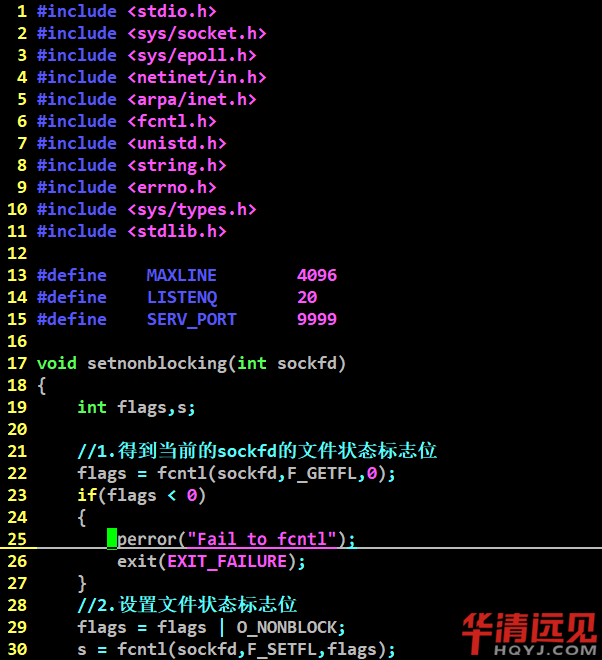
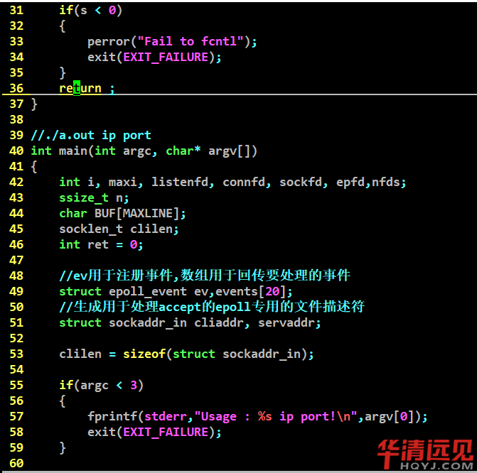
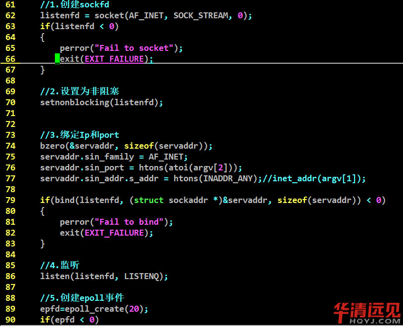
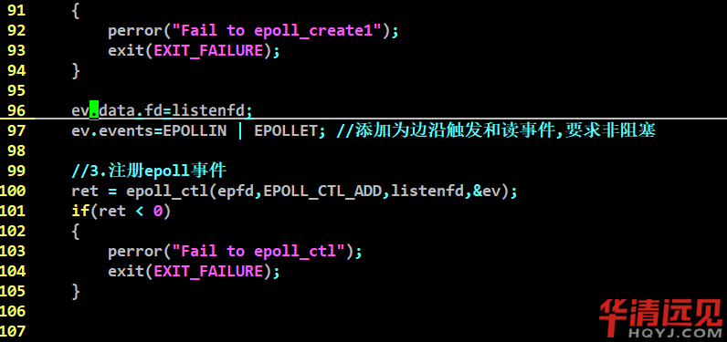
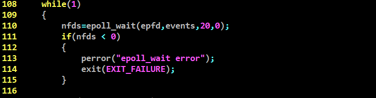
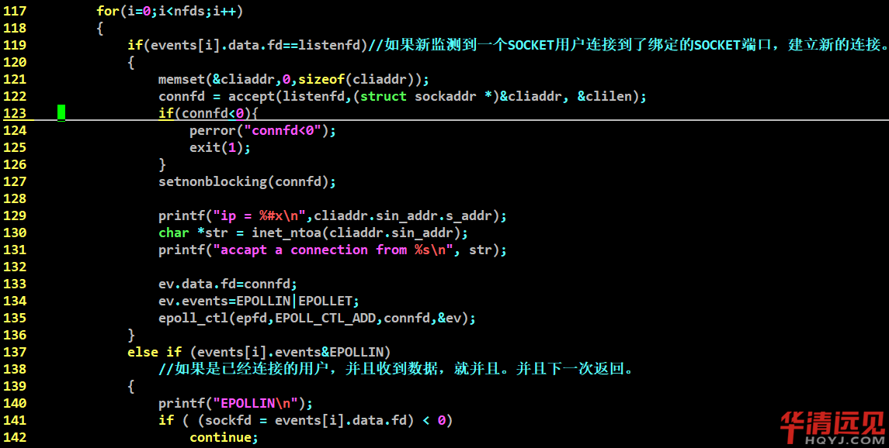
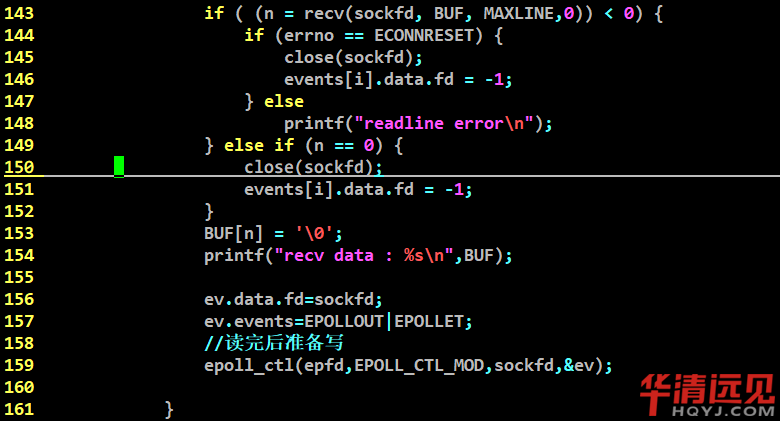
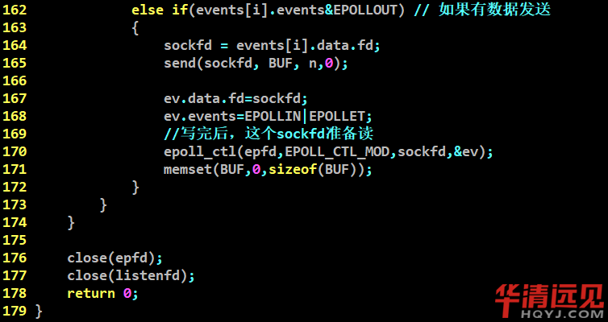
Client.c
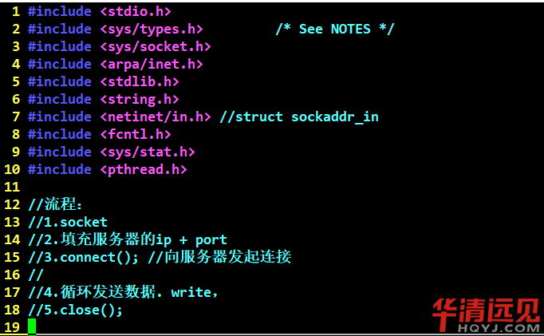
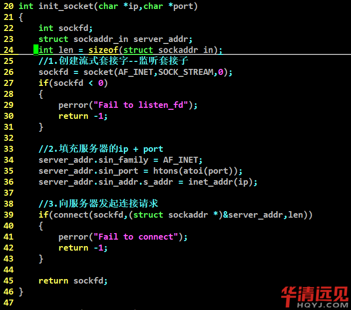
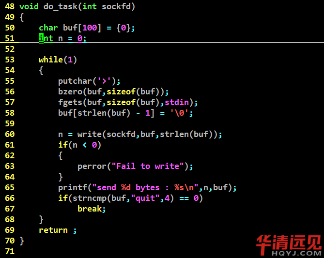
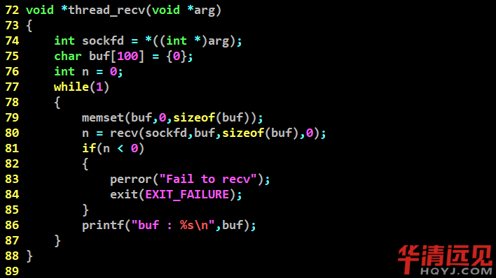
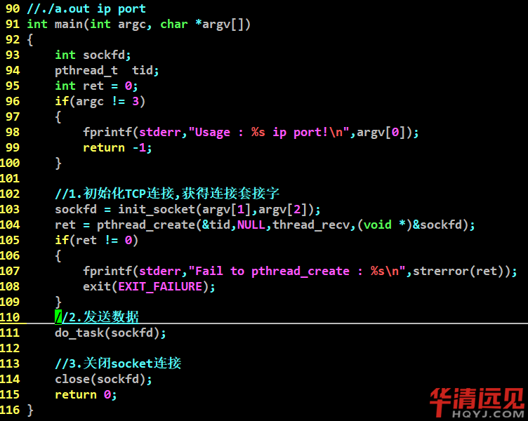
运行结果：
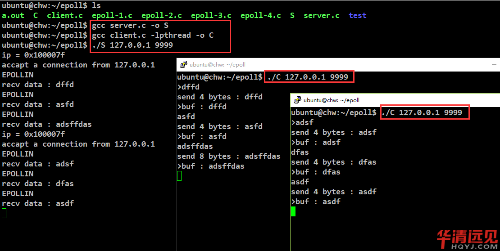
华清图书馆
0元电子书，限时免费申领10本华清图书PDF版
扫码关注华清远见公众号